단순한 암기가 아닌, 손으로 당기며 스스로 깨닫는 공간지각력 발달 시스템
전개도의 주요 접합점에 구멍을 뚫고 가이드 실을 교차 통과시켜, 손잡이(PULL)를 당기면 실의 인장력(Tension)이 각 면을 직각 및 경사각으로 동시에 일으켜 세웁니다.
"어떤 모서리와 어떤 모서리가 만날까?", "어느 면이 서로 마주 볼까?" 라는 시험 문제 유형을 실을 당길 때 맞물려 닫히는 과정을 직접 눈으로 보며 즉각적으로 이해합니다.
스케치북 바닥에 밑면을 고정하여, 실을 당기면 입체로 솟아오르고 실을 풀고 책을 덮으면 다시 납작한 평면으로 접힙니다. 찢어지거나 망가지지 않고 무한 반복 학습이 가능합니다.
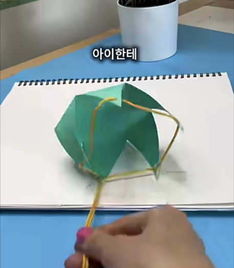
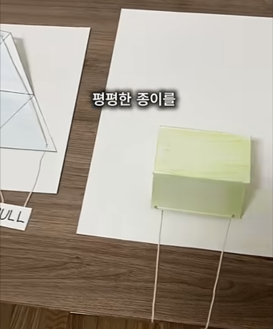
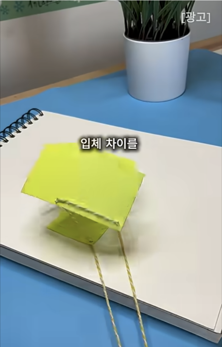
탭을 클릭해 각 도형의 구조와 특성을 알아보세요
Cube
6개의 정사각형 면으로 이루어진 입체도형입니다. 전개도를 펼치면 십자 모양의 평면이 되며, 실을 당기면 순식간에 3D 큐브로 세워집니다. 모든 면의 넓이가 같고, 모든 모서리의 길이가 같은 것이 특징입니다.
V − E + F = 8 − 12 + 6 = 2 ✓
Rectangular Prism
6개의 직사각형 면으로 이루어진 입체도형입니다. 정육면체와 꼭짓점, 모서리, 면의 수는 같지만 면의 크기가 서로 다릅니다. 가로·세로·높이가 모두 다를 수 있습니다.
V − E + F = 8 − 12 + 6 = 2 ✓
Cylinder
두 개의 원형 밑면과 하나의 직사각형 옆면(곡면)으로 이루어집니다. 전개도를 펼치면 직사각형이 나타나고, 이것이 말려 원을 감싸는 과정이 바로 원기둥의 비밀입니다. 꼭짓점이 없는 것이 특징!
Pyramid (Hexagonal)
별 모양의 전개도를 실로 당기면 삼각형 면들이 모여 꼭짓점을 형성합니다. n각뿔은 n개의 삼각형 옆면과 1개의 n각형 밑면을 가집니다. 육각뿔의 경우 별 모양 6개의 날개가 솟아올라 꼭짓점이 만나는 장면이 가장 인상적입니다!
V − E + F = 7 − 12 + 7 = 2 ✓
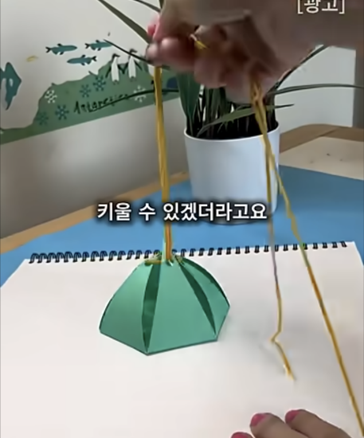
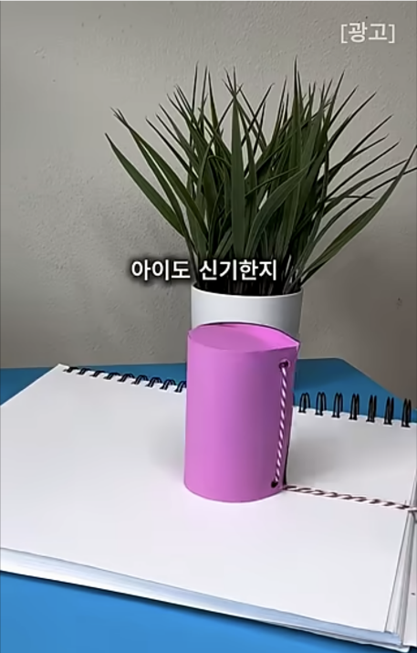
n 값을 조절하면 면·꼭짓점·모서리 수가 실시간으로 바뀝니다
| 도형 | 면 (F) | 꼭짓점 (V) | 모서리 (E) |
|---|---|---|---|
| n각기둥 | n+2 | 2n | 3n |
| n각뿔 | n+1 | n+1 | 2n |
| 원기둥 | 3 | 0 | 2 (곡선) |
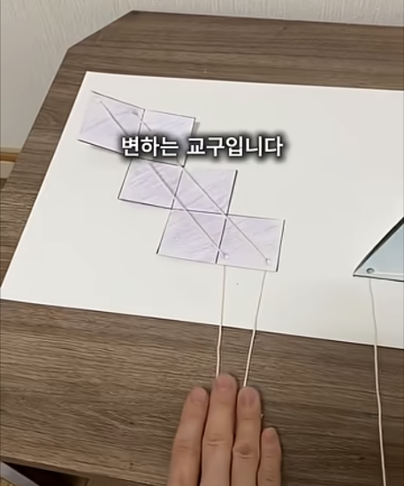
준비물: 도화지, 펀치, 가이드 실, 풀, 스케치북 — 10분이면 완성!
180g~220g 두께의 탄력 있는 색상 도화지에 원하는 전개도를 인쇄합니다.
서로 맞닿아야 하는 면의 꼭짓점 끝 부분에 1공 펀치(지름 3~4mm)로 구멍을 뚫어줍니다.
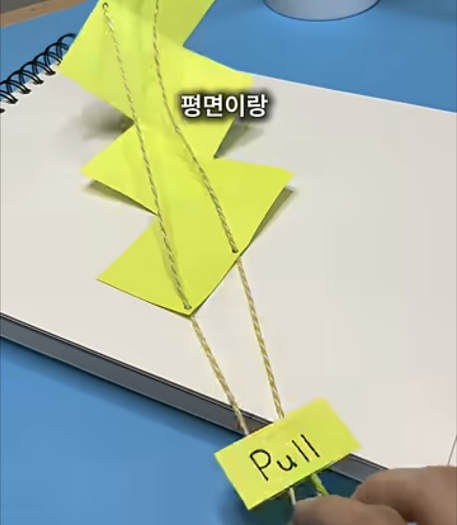
마찰이 적고 튼튼한 지끈(노끈) 또는 코팅 면끈을 구멍들에 차례대로 통과시킵니다.
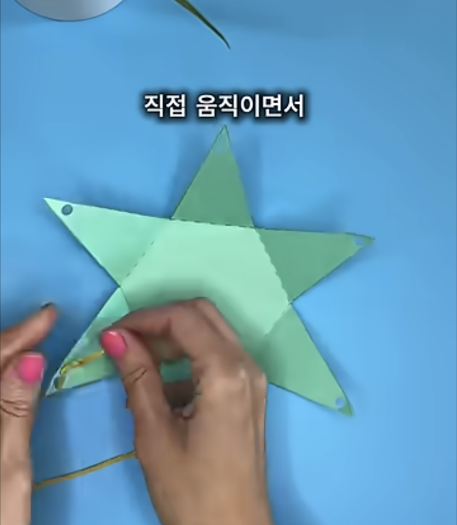
스케치북 한 페이지의 중앙에 전개도의 기준 '밑면 1개'에만 양면테이프나 풀을 칠해 단단히 붙입니다.
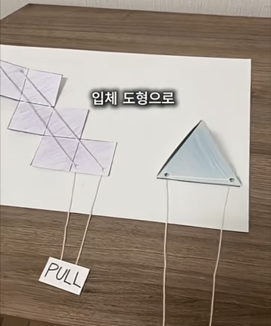
PULL 손잡이를 천천히 앞으로 당겨 입체도형이 한 번에 똑바로 서는지 확인합니다.
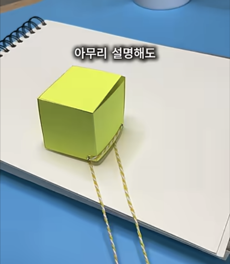
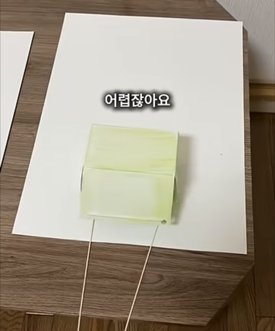
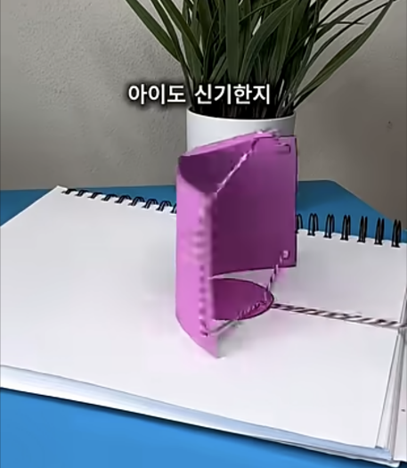
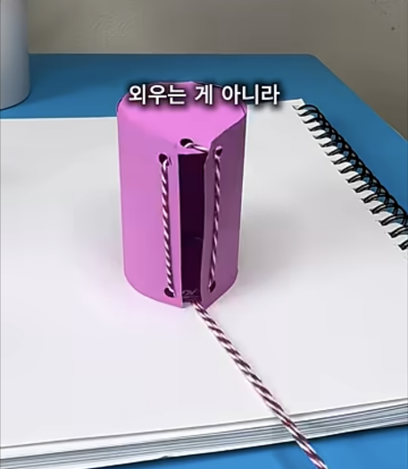
아이와 함께 수학적 대화를 나눠보세요
"이 종이를 당기기 전에 봐볼까? 밑면은 무슨 모양이고 옆면은 몇 개일까?"
➔ 평면도형의 성질 관찰 및 입체 형태 예측 유도
"줄을 살살 당기니까 어떤 변과 어떤 변이 만나서 선(모서리)을 만드니?"
➔ 전개도의 변과 입체 모서리의 일대일 대응 체득
"위쪽이 뾰족한 각뿔과 평평한 각기둥은 실을 꿴 방법이 어떻게 다를까?"
➔ 기하학적 수렴(꼭짓점)과 평행(밑면) 개념의 심화 비교
"이 입체도형의 이름이 뭘까요? 면의 수를 세어봐요."
➔ 입체도형 이름·구성 요소(면/모서리/꼭짓점) 개념 도입
"교과서의 전개도와 이 교구의 전개도가 같은지 비교해볼까요?"
➔ 전개도 → 입체 대응 관계 직관적 이해
"면-꼭짓점-모서리의 수를 세어 V-E+F를 계산해보세요."
➔ 오일러 공식 체험적 귀납 → 연역 확장